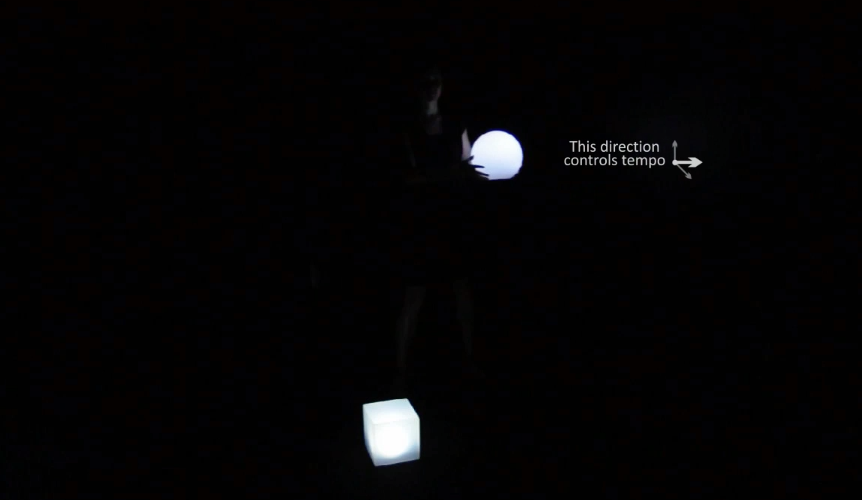
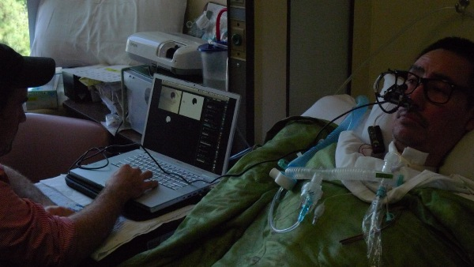
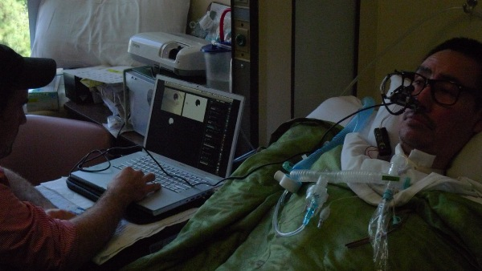

RESPUESTA DE INVESTIGACIÓN/LECTURA
Realizado por Jorge Yepez
1. Luisa Pereira.(www.luisaph.com)

Luisa Pereira es una de las artistas mas reconocidas en el mundo de la programación
e interactividad. Además es músico y busca realizar proyectos que mezclen las cosas
que mas le apasionan. Nació en Brasil, pero se crió y creció en Uruguay donde a realizado
algunos de sus proyectos. Actualmente forma parte de Processing Foundation y reside en NY.
Todos los proyectos realizados por Luisa me parecieron increíbles, pero el que mas
me gusto fue: CAJA DE MUSICA. Consiste en que el usuario a través de unas luces de
diferentes formas, pueda controlar el tempo y el tipo de música que se esta reproduciendo.
Si se mueve una luz a la derecha la canción será mas rápida, a la izquierda mas lenta.
Si se la lleva hacia delante, abra una transición entre la misma canción pero de versión
acústica a electrónica y viceversa. Lo que creo que se utilizo para este proyecto es un
trackeo de la luz, y se mapeo para que los valores varíen suavemente depende del lugar
en el que esta la luz. Así también cuando se mueve la luz hacia delante, se jugo con
la profundidad o también se pudo hacer un trackeo de la escala de la luz. Mientas
mas grande es(osea mas adelante este) la canción va a cambiar de acústica a electrónica.
En lo personal me agrado mucho la idea de que el usuario pueda controlar lo que escucha
en cuanto a genero y velocidad de la canción. Pero me parece que seria aun mas interesante
agregar alguna lista de canciones o sonidos que las personas puedan escoger para de ahí
irles modificando. Seria bueno también hacer lo mismo pero en vez de que se trackee a las
formas que contienen las luces. Dar a los usuarios camisetas o algún accesorio como
pulseras que brillen en la oscuridad para que así haya mas libertad de movimiento.
2. Gene Kogan.(www.genekogan.com)
 Gene Kogan, programador y artista Norteamericano. Busca generar arte a través de las
nuevas plataformas tecnológicas. Actualmente es contribuyente en openFrameWorks, Processing,
P5js. Es conocido por la manipulación y adaptación de imágenes. Crea programas e interfaces
tecnológicas para presentaciones musicales en vivo, exposiciones, etc.
Hubieron dos proyectos que más me llamaron la atención. Style Transfer y Kinect Sensor
ToolKit. Para el primero, se tomó como referencia un cuadro de cada pintor, de ahí me parece
que se cogió cada pixel de la imagen a cambiar y se programó para que cada pixel coja el
color de los pixeles de la imagen original. Para el segundo proyecto, se utilizó la librería
kinect Sensor ToolKit y se calibró el kinect con el proyector. Entonces las personas se
ubicaban delante del proyector y el programa cuando no había luz, dibujaba algo alrededor
de esa parte.
Me parecen dos grandes proyectos, pero que en algún momento se deberían fusionar. Se podría
manipular la imagen captada por el kinect y adaptarla a cualquier estilo de pintura o
gráfico que el usuario decida.
3. Zach Liebermann / SFPC.(www.thesystemis.com)

Zach Liebermann, es un artista/programador, co-creador de openFrameWorks, fue profesor de
Parsons School of design y actualmente lo es en School for Poetic Computation. Sus trabajos
se caracterizan por la mezcla e interacción entre lo análogo y lo digital.
EyeWriter, es un proyecto que permite que las personas puedan dibujar a través de sus ojos.
Se lo creó con el objetivo de que las personas paralíticas puedan expresar y plasmar cualquier
tipo de gráfico. La interfaz de este proyecto es muy simple ya que se lo elaboró con el objetivo
de que sea barato y fácil de construir. Para eso se necesitan gafas, una cámara y una computadora.
Y un software creado para su uso, que realiza un tracking del ojo y va trazando líneas de acuerdo
a la posición de la pupila.
Es un excelente proyecto que se debería seguir con su desarrollo. Se podría realizar algo
parecido pero con sonidos, dependiendo la posición del ojo, se generarían nuevos sonidos. Así
podrían componer música a través de sus pupilas.
Referencias
https://vimeo.com/18609128
http://eyewriter.org/
http://thesystemis.com/projects/
http://eyebeam.org/people/gene-kogan
http://sfpc.io/
Gene Kogan, programador y artista Norteamericano. Busca generar arte a través de las
nuevas plataformas tecnológicas. Actualmente es contribuyente en openFrameWorks, Processing,
P5js. Es conocido por la manipulación y adaptación de imágenes. Crea programas e interfaces
tecnológicas para presentaciones musicales en vivo, exposiciones, etc.
Hubieron dos proyectos que más me llamaron la atención. Style Transfer y Kinect Sensor
ToolKit. Para el primero, se tomó como referencia un cuadro de cada pintor, de ahí me parece
que se cogió cada pixel de la imagen a cambiar y se programó para que cada pixel coja el
color de los pixeles de la imagen original. Para el segundo proyecto, se utilizó la librería
kinect Sensor ToolKit y se calibró el kinect con el proyector. Entonces las personas se
ubicaban delante del proyector y el programa cuando no había luz, dibujaba algo alrededor
de esa parte.
Me parecen dos grandes proyectos, pero que en algún momento se deberían fusionar. Se podría
manipular la imagen captada por el kinect y adaptarla a cualquier estilo de pintura o
gráfico que el usuario decida.
3. Zach Liebermann / SFPC.(www.thesystemis.com)

Zach Liebermann, es un artista/programador, co-creador de openFrameWorks, fue profesor de
Parsons School of design y actualmente lo es en School for Poetic Computation. Sus trabajos
se caracterizan por la mezcla e interacción entre lo análogo y lo digital.
EyeWriter, es un proyecto que permite que las personas puedan dibujar a través de sus ojos.
Se lo creó con el objetivo de que las personas paralíticas puedan expresar y plasmar cualquier
tipo de gráfico. La interfaz de este proyecto es muy simple ya que se lo elaboró con el objetivo
de que sea barato y fácil de construir. Para eso se necesitan gafas, una cámara y una computadora.
Y un software creado para su uso, que realiza un tracking del ojo y va trazando líneas de acuerdo
a la posición de la pupila.
Es un excelente proyecto que se debería seguir con su desarrollo. Se podría realizar algo
parecido pero con sonidos, dependiendo la posición del ojo, se generarían nuevos sonidos. Así
podrían componer música a través de sus pupilas.
Referencias
https://vimeo.com/18609128
http://eyewriter.org/
http://thesystemis.com/projects/
http://eyebeam.org/people/gene-kogan
http://sfpc.io/